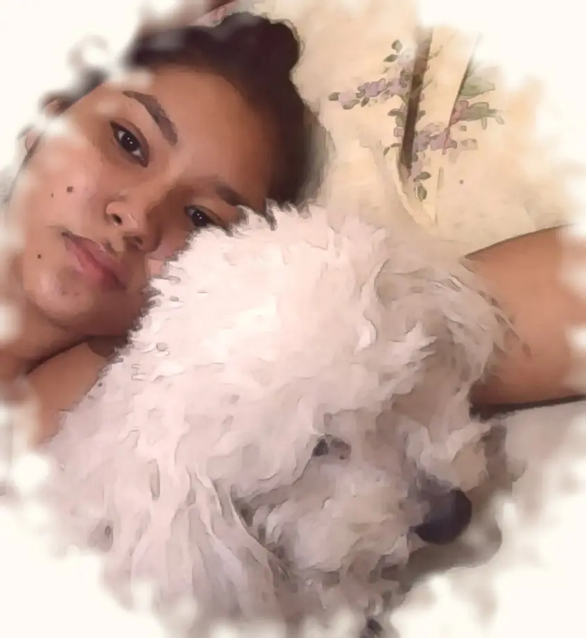

Canela
Un pedacito de este año que dolió

Hay huellas que no se borran del piso,
se quedan a vivir en el corazón.
Canela sigue corriendo
por todos los lugares donde la quisiste.
Mi amor, sé que este año no ha sido fácil. Despedir a Canela te rompió el corazón, y está bien que todavía duela: duele así porque así de grande fue el amor que le diste.
Ella no tuvo una vida cualquiera. Tuvo la tuya: tus brazos, tu voz llamándola, tus mimos y tu paciencia. Fue una perrita feliz porque te tuvo a ti.
No tienes que estar bien todavía. Extráñala y llórala lo que necesites; yo voy a estar a tu lado, tomándote de la mano como tú lo has hecho conmigo tantas veces.
Y cuando la extrañes, recuerda que el amor no se fue con ella. Se quedó en ti, en todo lo que te enseñó y en cada huella que dejó en la casa y en tu corazón.
Gracias, Canela, por cuidar a mi amor todo este tiempo.
Feliz cumpleaños, amor
Amor:
Seis años y todavía me sorprendes. Gracias por cada risa, por cada abrazo que me arregló el día y por elegirme incluso en los días difíciles. Esta página es apenas un pedacito de lo que hemos vivido; lo mejor nunca cupo en una foto.
Sé que este año también trajo tristeza, y por eso hoy quiero recordarte que todavía hay mucha luz esperándote, y que no la vas a buscar sola.
Hoy celebro que existes, y que de todos los caminos posibles, el tuyo se cruzó con el mío.
Te amo hoy, y en todos los capítulos que nos faltan.
Sebastián